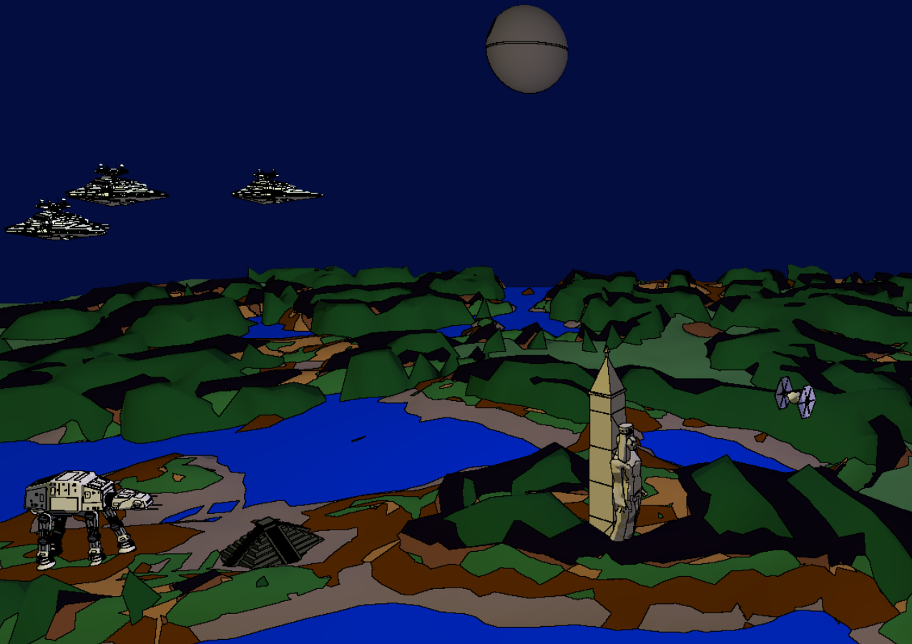
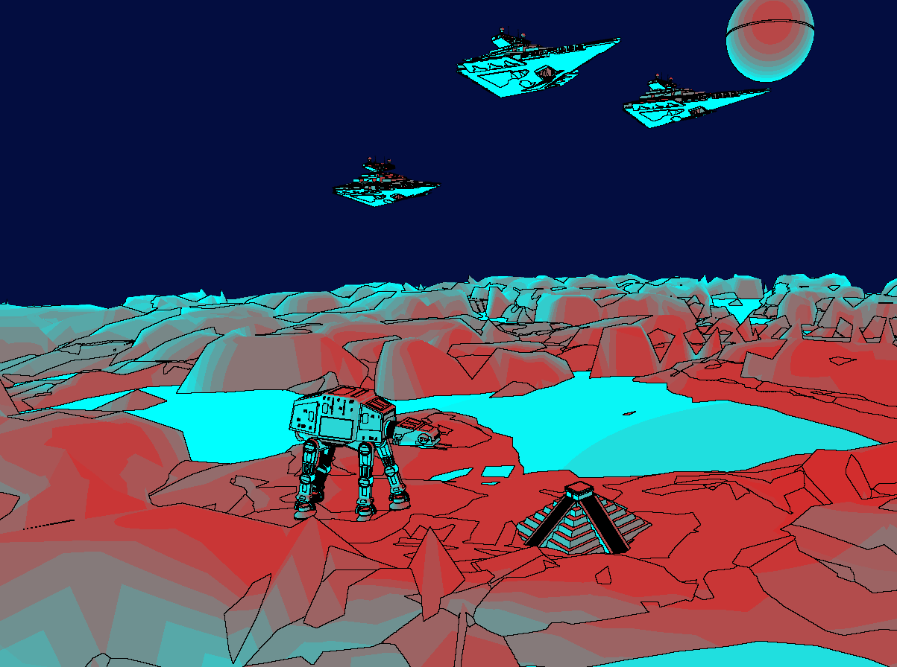
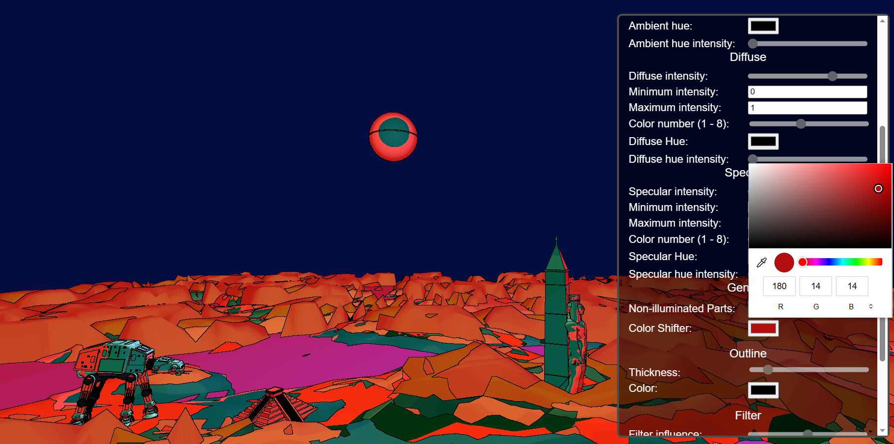
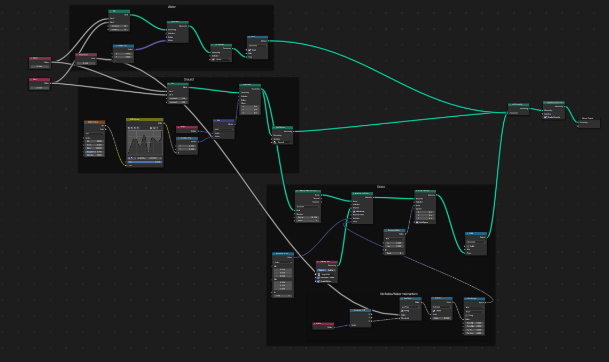
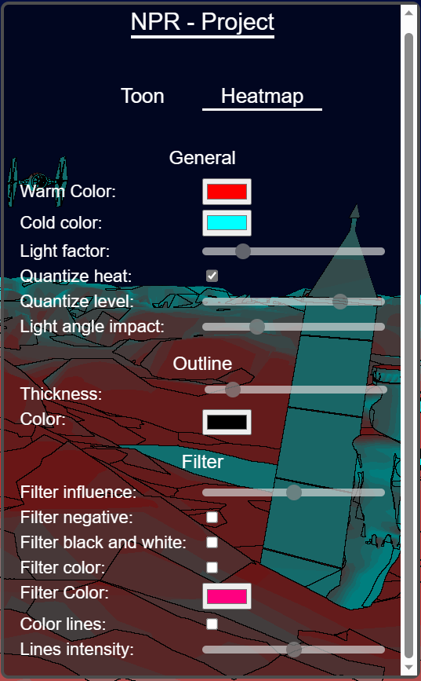
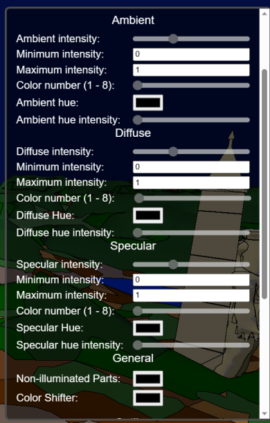

In this project, we wanted to implement a set of “non-photorealistic” shaders in an artistic goal. We first wanted to start this project with a “toon” shading approach, as showed in the milestone report, we easily achieve to implement this effect by “quantizing” the colors. The next step was to implement an outline for each object to emphasize the cartoon style of this shader.
When we finished this shader, we added a lot of parameters to make the experience very customizable. Moreover, to present our work in the best way possible, we created a new scene in Blender. In the scene you’ll find a lot of Star Wars references, and we thought that it would perfectly match the style of our shader.
After this implementation, we still wanted to add more shaders, so we created a “heat” shader, where the user can choose the “cold” color and the “warm” color, and each color of the scene is computed depending on the distance and the direction to the light. Finally, because our goal was to add a lot of parameters, we mixed this shader with the toon one, meaning that we can “quantize” the color zones depending on the “temperature” and also added outlines to the actors of the scene, in the same way as the toon shader.
The main advantage of this project is that is it very easy to incorporate other shaders to the project and to modify the existing ones, for example (and this is the last added feature) we implemented “filters” for the final displayed image to let the user modify the rendering even more, with a “negative” color effect or even a “black & white” effect.
To have the passing grade (4.0), we would like to have at least one “Toon Rendering” completely done. We should be able to travel in it, like we could in the homework. We also would have sliders to control different parameters of our implementation.
In top of that implementation, we would like to create more filters. It could be artistic or very experimental ones, so that the user could play with the options and parameters to create a unique rendering for their scene. We will link a demonstration blender scene as well to illustrate the different rendering we implemented. The additional points would then correspond to these other renderings and their mix.
At the end, the main goal is to create from a single scene, experimental and artistic renderings just by selecting some options and playing with parameters. So our project would be more like a tool to create interesting images that differ from classical realistic rendering. Note that our renders should not be too heavy, so the final result wouldn’t be an image but rather a complete scene where we could travel and express our artistic sense!
Here are some images of our project.
  
We planned to work the three of us together to be more efficient on the project. We each other help on assigned tasks. So we think to have all worked equally for this project.
But principally worked as follows:
In fact, creating a “toon” effect, is a very natural operation, we only needed to break the color gradients into different plain color zones. To do so, changing our original Blinn-Phong model is more than enough.
nl between the normal and the light direction is the value that is quantized. How does that work? Well, we created a function quantize_value that takes some parameters (especially the number of color levels) that define how the passed value (between 0 and 1) should be transformed. The overall calculation is not very complicated, simply a combination of ceil and division operations.hn between the normal and the vector h (the bisector between light and view directions).We also added the ability to add hue to every different light contribution just by adding hue color to the computed Blinn-Phong color weighted by hue intensity. Each Blinn-Phong component (ambient, diffuse, specular) can each be separately modified (the mentioned hue impact and the intensity as well)
A color shifter was also added by adding a ‘shifting color’ to the computed color. We clamp the addition and make it cycle so it doesn’t reach limit value (if so it continue shifting but from the black color)
The way we implemented the outlines was vey similar to what we could find on the internet. There were two different passes.
silhouette outline, we inspired ourselves by looking at this resource, we only inspired ourselves to give different color to each object, as it was explained in the article, but ended up rewriting it differently in our code.inner outline, for this we inspired ourselves mostly by this article. We implemented the algorithm to extract the face id a little bit differently, as we were not using exactly the same technologies, and we also encountered some performance issues, so we had to try to optimize a little bit the algorithm to make it faster, by for example precomputing the adjacency matrix to be able to access the neighbor faces very efficiently.The two passes explained before, are stored into two different buffers, then to actually display the outline we pass these two buffers as uniforms, and by using a for loop, we looked at each neighboring pixel in the shader code, and if we look whether the color of the current pixel differed from its neighbor color, we render it using the border color, as we can choose which color we want to give to the borders.
We encountered an issue at the beginning with the buffer, we had to enable the depth in the frame buffer, to correctly add the color to the actor’s faces, to take the closest object from the view point. As otherwise we had some issues where some hidden object would appear in front.
We encountered an issue as well with the outline thickness. The way we wanted to do, was to iterate over close pixel with a for loop and pass the stop condition as a uniform representing the thickness of the outline, but we found out that it was not possible to use uniform as stop condition of a loop. To fix this issue, we decided not to unroll the loop manually, as it would have been a lot of code duplication, but rather set a max interactions in a #define, and then add a condition based on the uniform value to execute the code or not.
The heat algorithm only uses two parameters to define the “temperature” of a given point:
nlAs said in the description, one can enable the option “quantize heat” to change the temperature gradient to an image where we clearly see the zones with a similar temperature. Also, the user can define how the distance impacts the temperature (if this parameter is at 0, only the angle between the normal and the light, and at 1, only the distance counts)
Note that we have three lights and the scene, and each one equally impacts (each distance and angle counts) the temperature of the point, see heat.frag.shader
The map was made with blender in which we used Geometry nodes and Perlin noise to generate multiple layers of a deformed plan to generate a coherent map.
The following geometry nodes allows us to tweak the parameters and change the topography of a layer: 
The other objects like ship destroyer, tie fighter and pyramid, are free 3D models found on https://sketchfab.com/. They were all conscientiously placed on the scene and some of them were animated the same way we animated the solar system in the homework.
We also set in the javascript some useful keybindings to have control on the scene animation.
All following key camera movement move the camera center to achieve their goal:
Click on image to open the video:
 
We used Blender to create the scene.
We used the homework pipeline and built upon it to create our rendering. We worked with the following sources:
{kind=link}